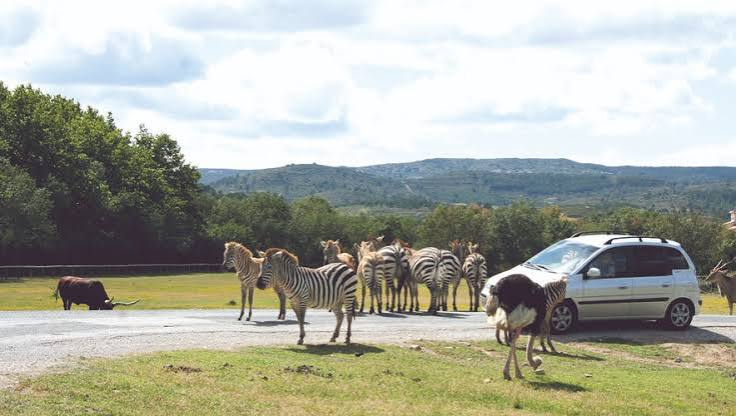

Réserve africaine
de Sigean


⟹ Parc Animalier ⟸
Un projet né d'abord d'une volonté de préserver un milieu naturel. Au début des années 1970, à une quinzaine de kilomètres au sud de Narbonne, les rives des étangs de Bages-Sigean présentent encore de vastes espaces non urbanisés. À l'embouchure de la Berre, autour d'anciens salins reconvertis en un grand plan d'eau appelé l'Œil de Ca, se succèdent lagunes, marais, garrigues, vignes et terrains ouverts. Dans le contexte des grands aménagements touristiques du littoral languedocien, la conservation de ce secteur riche en faune et en flore devient un enjeu important.
L'autorisation de la Mission Racine en 1972. La Mission interministérielle d'aménagement touristique du littoral du Languedoc-Roussillon, dite « Mission Racine », autorise en 1972 la réalisation d'un parc animalier d'un type alors très novateur. Le principe est de créer un établissement de grande superficie, intégré au paysage, reposant sur des méthodes d'élevage extensif et capable de contribuer à la protection du milieu naturel tout en présentant au public de grands animaux, principalement africains.

Paul de La Panouse et Daniel de Monfreid. Le projet est lancé à l'initiative de Paul de La Panouse, déjà engagé dans le développement de parcs animaliers, et de Daniel de Monfreid. Leur ambition n'est pas de reproduire un zoo urbain traditionnel fait d'une succession de petites cages, mais de profiter de l'étendue du domaine pour constituer de grands parcs où des troupeaux peuvent évoluer dans des conditions plus proches de leurs comportements naturels.
8 avril 1974 : ouverture au public. La Réserve Africaine de Sigean ouvre officiellement ses portes le 8 avril 1974. Le domaine initial couvre environ 88 hectares. La visite combine dès l'origine de grands espaces parcourus en voiture et des secteurs accessibles à pied. Cette organisation, inspirée du principe des parcs-safaris, permet de maintenir des groupes sociaux et de grands herbivores dans des enclos beaucoup plus vastes que ceux des zoos classiques de l'époque.
Une croissance spectaculaire. Au fil des décennies, la réserve acquiert de nouveaux terrains et agrandit ses installations. De 88 hectares à l'origine, le domaine dépasse aujourd'hui 350 hectares. Les effectifs animaux augmentent également et les infrastructures se diversifient : plaines d'élevage, parcs pour carnivores, volières, espaces pour reptiles, bâtiments vétérinaires et zones techniques. Dès 1977, trois ans seulement après son ouverture, la réserve accueille son millionième visiteur, signe de son succès rapide.
De la présentation des animaux à la conservation. Comme l'ensemble des grands parcs zoologiques européens, Sigean fait progressivement évoluer ses missions. L'élevage n'a plus seulement une fonction de présentation au public : il participe à la gestion de populations animales et à la conservation d'espèces menacées. La réserve prend part à des programmes européens d'élevage coordonnés et travaille avec les réseaux zoologiques français et européens. Les naissances de certaines espèces rares constituent une part importante de cette mission.
Un parc zoologique inséré dans une zone humide méditerranéenne. L'une des singularités de Sigean est que la conservation ne concerne pas uniquement les animaux hébergés. Dès les plans d'origine, une vaste zone périphérique en relation avec les étangs de Bages-Sigean est maintenue comme espace de protection biologique. Cette continuité entre parc animalier et milieu lagunaire favorise une importante faune sauvage locale.
Une halte pour les oiseaux migrateurs. La réserve se trouve sur l'un des grands axes migratoires de la Méditerranée occidentale, emprunté par les oiseaux qui longent le littoral avant de franchir ou contourner les Pyrénées. Flamants roses, cigognes, grues, hérons, aigrettes, cormorans, canards et de nombreuses autres espèces utilisent les étangs et marais du domaine pour se nourrir, se reposer ou parfois nicher. La protection du site profite donc à une biodiversité qui dépasse largement les collections zoologiques.
Un demi-siècle d'évolution. En 2024, la Réserve Africaine de Sigean a célébré ses cinquante ans. En un demi-siècle, elle est passée du statut de parc-safari pionnier à celui d'un grand établissement zoologique européen associant accueil du public, élevage, conservation, recherche, éducation à l'environnement et protection d'un milieu naturel méditerranéen. Son histoire reflète aussi l'évolution profonde du rôle des zoos : la question du bien-être animal, la conservation des espèces et la sensibilisation du public occupent désormais une place centrale.
Une identité indissociable de la Narbonnaise. La réserve ne doit donc pas être comprise comme un simple « morceau d'Afrique » transplanté dans l'Aude. Son implantation résulte d'une histoire locale très précise : celle des anciens salins, des étangs de Bages-Sigean, de la Mission Racine et de la volonté de maintenir un vaste espace non urbanisé. C'est cette combinaison entre grands animaux, paysages lagunaires et biodiversité sauvage qui fait depuis 1974 l'originalité du site.
Étangs de Bages-Sigean : la grande lagune qui borde directement la réserve, un paradis pour les oiseaux.
Village de Sigean : à deux pas, pour prolonger la découverte du Narbonnais.
Massif de la Clape : randonnées et vignoble AOC, à quelques kilomètres au nord.
Narbonne : cathédrale Saint-Just et Palais des Archevêques, à une vingtaine de kilomètres.